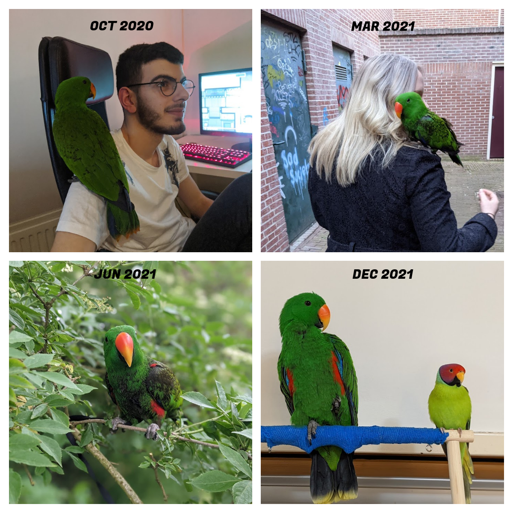

How to care about Arthur
Diet
We begin with the easy part and that is diet.
Every day he has 3 food bowls. One containes water, the second containes pellets and the third one containes fruit and vegtables.
I start the morning with changing his water and adding pellets if needed. Then I start cutting the fruits and vegtables. Somethimes I cut the vegtables the day before to save some time in the morning. I always use minimal off five kinds of choises for them so they get the vitmines. To add some protine I sometimes add some rice or some cooked beans (without salt ofcourse). Corn and grapes are clear favorites. Trick is not to give to much in the morning so they will want to eat it in the evning as well and still enjoy it.
There are many things parrots can eat but also much that is dangarous or toxic. This you can always find online but the point is, never take a chance. Always check!
Feathers
He has beautiful feathers. They really shine in the most vibrant green color you can imagine. The fethers are nearly looks like fur. They are also oil based. That means he does not give away as much dust like other kinds of birds like the cockatiel. So if you are suffering from asthma and still want a pet this might be a good option. But it comes with a price. You have to make sure that he gets a good amount of vitamines every day. And the mose painfull one, you can't pet him with your hands. Human oil truns the green eclectus feathers black. Our oil dryes out the piggment of the feathers. I learned this the hard way. I read about eclectus care many years before we adopted Arthur but nobody warned me about this. I have 4 pictures of Arthur and his fethers down below. They show you how his color changes over time. The only way to get back the beutiful color was to wait for the moult (when his feathers changes). As soon as we found out we stopped petting him with our hands and made sure our hands were covered if we touched him.
